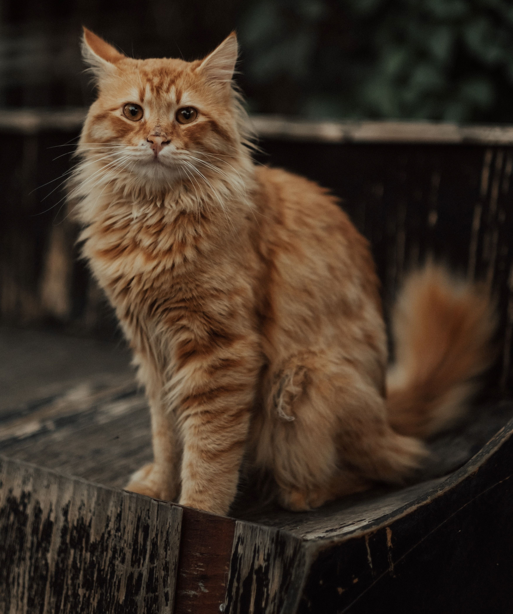
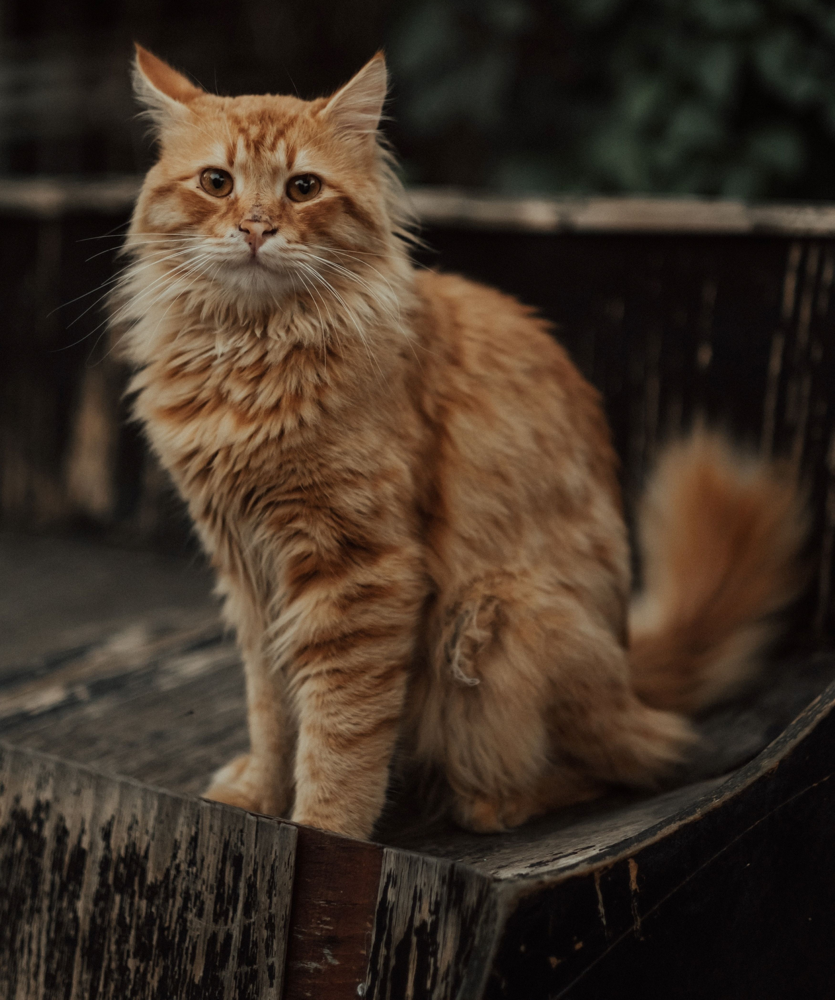

General Information
The Siberian cat breed is a magnificent and robust feline known for its stunning appearance and hearty disposition. Originating from Russia, these cats have adapted to harsh climates, resulting in their dense, semi-longhair coats that come in various colors and patterns. Siberians are renowned for their friendly and affectionate nature, making them wonderful companions for families and individuals who appreciate both their majestic appearance and loving personalities.
Behavior
- Hypoallergenic Coat: Siberian cats are often considered hypoallergenic due to their lower levels of the Fel d 1 allergen, making them a suitable choice for some allergy sufferers.
- Great Jumpers: These cats are exceptional jumpers, with strong hind legs that allow them to reach impressive heights and engage in agile play.
- Love of Water: Siberians tend to have a fascination with water and may play in sinks, bathtubs, or even join their owners in the shower, displaying an affinity for aquatic adventures.
- Musical Purr: Siberian cats are known for having a unique and melodious purr, which adds to their charming and endearing personality.
- Dog-Like Loyalty: They often form deep bonds with their human families and are known for their dog-like loyalty, following their owners around the house and providing constant companionship.
- Natural Camouflage: Their coats are adapted to blend in with snowy environments, showcasing a coat pattern that mimics the colors of their native Siberian landscapes, enhancing their natural allure and grace.
Colors and Shapes
Siberian cats are known for their robust and muscular bodies, which are well-suited for surviving harsh climates. Their semi-longhair coats can come in a wide array of colors and patterns, including tabby, solid, and bi-color, among others. With their strong builds and luxurious fur, Siberian cats exude a regal and majestic appearance, capturing the essence of their wild ancestors while maintaining a domesticated and friendly disposition.
History
The history of the Siberian cat breed is deeply intertwined with the vast wilderness of Russia. These cats are believed to have existed for over a thousand years, evolving naturally in the Siberian forests and earning their place as one of the native feline breeds of Russia. They were cherished for their hunting prowess, resilience in extreme climates, and affectionate nature. Siberian cats have a rich cultural heritage, with mentions in Russian folklore and literature, and they have been an officially recognized breed in various cat associations since the 1990s. Today, they continue to be celebrated worldwide for their captivating blend of wild beauty and domestic charm.

 
